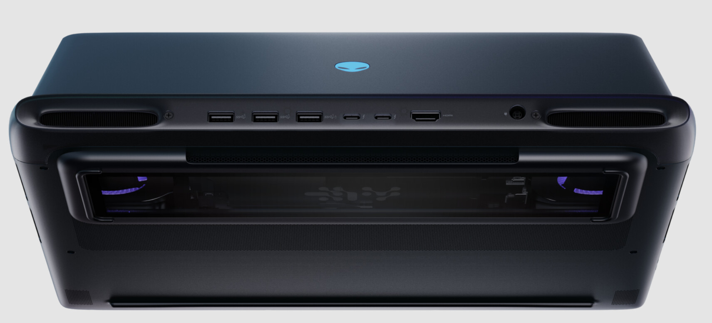

Search
Alienware Area-51 Laptops with RTX 5090: A Galactic Leap in Gaming Power
Overview
Alienware’s Area-51 branding has long been synonymous with bleeding-edge performance and futuristic aesthetics, and the 2025 reboot of the Area-51 laptops—available in 16-inch and 18-inch variants—lives up to that legacy. Equipped with NVIDIA’s flagship GeForce RTX 5090 Laptop GPU and Intel’s Core Ultra 9 275HX processor, these machines are built for gamers and creators who demand uncompromising power in a mobile form factor. I’ve spent time with both models, pushing them through gaming benchmarks, creative workloads, and everyday use to see if they justify their premium price tags and lofty promises. Spoiler: they’re out of this world, but not without a few earthly caveats.
Design and Build: Alienware’s Cosmic Aesthetic
Alienware has leaned hard into the extraterrestrial vibe with its new “AW30” design language, inspired by phenomena like the Aurora Borealis. The anodized aluminum chassis, finished in a striking Liquid Teal, shimmers with an iridescent sheen that shifts under different lighting. It’s bold yet sophisticated, avoiding the garish pitfalls of some gaming laptops. The rounded edges and soft contours give it a sleek, almost organic feel, a departure from the boxy designs of Alienware’s past.
Both the 16-inch (7.49 lbs) and 18-inch (9.56 lbs) models are hefty, but their weight is justified by robust build quality and a thermal architecture that prioritizes performance. A Gorilla Glass window on the underside reveals glowing fans with customizable AlienFX RGB lighting, a nod to the Area-51’s sci-fi roots. The rear thermal shelf, encircled by an RGB light bar, adds flair while aiding airflow. You can tone down the lighting for a more subdued look, making it versatile for public spaces.
The port selection is comprehensive: three USB-A 3.2 Gen 1 ports, two Thunderbolt 5 ports (for RTX 5090 configs), HDMI 2.1, a 5Gbps RJ45 Ethernet, and a headset jack. Placing most ports on the rear edge keeps cables tidy, though it’s less convenient for quick plug-ins. The hinge, mostly internal, is sturdy but doesn’t allow the screen to open flat—a minor nitpick.

Display: Vibrant and Responsive
The 16-inch model sports a 2560x1600 (QHD+) IPS panel with a 240Hz refresh rate, while the 18-inch version ups the ante with a 300Hz QHD+ display. Both offer 500 nits of brightness, 100% DCI-P3 color coverage, and a 3ms response time. These are matte-finished IPS panels, delivering vibrant colors and wide viewing angles suitable for gaming and content creation. However, the lack of a mini-LED or OLED option feels like a missed opportunity, especially at this price point, where competitors like MSI and ASUS offer such displays.

In gaming, the high refresh rates ensure buttery-smooth visuals, particularly in fast-paced titles like Counter-Strike 2 and Apex Legends. NVIDIA’s G-Sync eliminates screen tearing, and the QHD+ resolution strikes a balance between sharpness and performance, making the RTX 5090’s power feel well-utilized. For creative work, the accurate colors and brightness make these displays reliable for photo and video editing, though professionals might prefer an OLED for deeper blacks.
Performance: RTX 5090 Unleashed
The star of the show is NVIDIA’s GeForce RTX 5090 Laptop GPU, boasting 175W of total graphics power (TGP) and leveraging the Blackwell architecture. Paired with the Intel Core Ultra 9 275HX (24 cores, 5.4GHz max turbo), up to 64GB of DDR5 RAM (7200 MT/s), and up to 12TB of Gen5 SSD storage, these laptops are performance juggernauts. My test units featured 32GB RAM and 2TB SSDs, a configuration that’s more than adequate for most users.
Gaming Benchmarks
- Cyberpunk 2077 (4K, Ultra, Ray Tracing Ultra, DLSS 4 Balanced): 82 FPS average. The RTX 5090’s DLSS 4 and frame generation pushed frame rates into the 90s at 1440p, delivering stunning visuals with minimal stuttering.
- Baldur’s Gate 3 (4K, Ultra): 95 FPS. The CPU’s multi-core prowess handled the game’s complex mechanics effortlessly.
- DOOM Eternal (4K, Nightmare): 165 FPS. The 5090 chewed through this fast-paced shooter, with the 300Hz display (18-inch) making every movement feel instantaneous.
- Flight Simulator 2024 (4K, Ultra): 68 FPS. Demanding open-world rendering was smooth, though CPU thermals crept up during extended sessions.
Compared to the RTX 4090, the 5090 offers a 5-10% raw performance uplift, but DLSS 4 widens the gap significantly, boosting frame rates by up to 30% in supported titles. The 32GB of GDDR7 memory ensures future-proofing for texture-heavy games, and the GPU’s AI-driven features enhance upscaling quality, making 4K gaming viable on a laptop.
Creative Workloads
In Blender 4.2 (Cycles rendering), the RTX 5090 rendered a complex scene 25% faster than an RTX 4080-equipped laptop. Adobe Premiere Pro exports of 4K video were similarly brisk, with the 24-core CPU and GPU acceleration cutting render times significantly. The Gen5 SSDs, with read speeds exceeding 10GB/s, made file transfers and project loading near-instantaneous.
Everyday Performance
Windows 11 Home felt snappy, with no bloatware bogging things down. Multitasking—running Chrome with 20 tabs, Discord, and Photoshop—was seamless, thanks to the 32GB RAM and CPU’s multi-threading. The 360W power adapter is bulky but necessary to sustain the 280W total package power (TPP).
Thermals and Noise: Cryo-Tech Cooling Shines
Alienware’s Cryo-Tech thermal architecture, featuring vapor chambers (on 5090 configs), quad fans (18-inch), and enhanced copper heatpipes, moves up to 37% more air while being 15% quieter than previous models. Under full load, GPU temperatures peaked at 78°C, and the CPU hit 92°C—warm but within safe limits. The 18-inch model’s quad-fan setup kept things slightly cooler than the 16-inch’s dual-fan design.
Fan noise is noticeable during intense gaming but not intrusive, staying below 45dB. In lighter tasks, the laptops are near-silent. The chassis remains comfortable, with the keyboard deck staying cool even during extended sessions. Alienware’s Command Center software offers granular fan control, letting you prioritize performance or acoustics.
Battery Life: A Necessary Compromise
With great power comes… abysmal battery life. The 97Wh battery lasted about 2 hours in light productivity tasks (web browsing, 50% brightness) and barely 45 minutes during gaming. This is expected for a high-performance laptop, but it means you’ll be tethered to the power adapter for serious use. The 360W charger is a brick, so portability takes a hit.
Pricing and Value: Premium Power, Premium Price
The Area-51 laptops with RTX 5090 configs start at $3,799.99 for the 16-inch (32GB RAM, 1TB SSD) and $4,199.99 for the 18-inch, with maxed-out versions (64GB RAM, 2TB SSD) hitting $4,399.99 and $4,799.99, respectively. These prices reflect the cutting-edge hardware, but they’re a tough sell when RTX 5080 models start at $3,199.99 with nearly comparable performance.
Compared to rivals like the MSI Titan 18 HX (RTX 5090, mini-LED display) or ASUS ROG Strix Scar 18 (similar specs, OLED option), the Area-51’s value hinges on its design and thermal efficiency. The Alienware tax—historically a premium for branding—feels less justified when competitors offer flashier displays or lower prices. However, Dell’s build quality, customer support (Alienware Elite Care), and North American pricing competitiveness soften the blow.
Verdict: A Powerhouse for the Elite Gamer
The Alienware Area-51 laptops with RTX 5090 are a triumphant return for the iconic brand, blending otherworldly design with chart-topping performance. They excel in gaming and creative tasks, with the RTX 5090 and Core Ultra 9 275HX pushing boundaries that few laptops can match. The Cryo-Tech cooling ensures sustained performance, and the Liquid Teal chassis is a head-turner.
However, the lack of premium display options and steep pricing make it a niche choice for enthusiasts who prioritize raw power over portability or value. If you’re chasing the ultimate mobile gaming experience and don’t mind the weight—physical or financial—the Area-51 is a cosmic beast that delivers. For others, the RTX 5080 models or competing brands might offer a better balance.
- Unrivaled gaming performance with RTX 5090 and DLSS 4.
- Stunning Liquid Teal design with robust build.
- Effective Cryo-Tech cooling keeps thermals in check.
- Vibrant, high-refresh-rate QHD+ displays.
- Tactile Cherry MX keyboard option.
- Gen5 SSD support for blazing-fast storage.
- No mini-LED or OLED display options.
- Battery life is predictably poor.
- Hefty and bulky, even for gaming laptops.
- Premium pricing may deter value-conscious buyers.
- Touchpad could be larger on the 18-inch model.
Good
The Area-51’s stellar performance, innovative design, and thermal excellence, held back by its display options, premium pricing, and portability compromises. It’s a cosmic powerhouse, but a few earthly limitations keep it from a higher orbit.
Comment Section